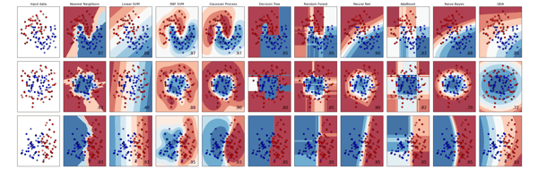
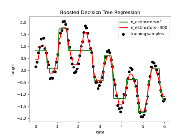
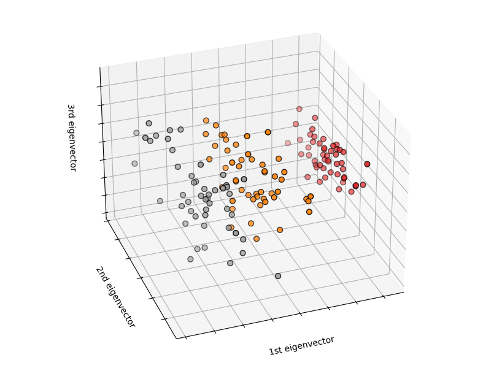

工程应用中的机器学习简介
Demand-oriented and practical; First-hand or global; Not satisfied.
前言
如何解决编程方面的问题
首先，我们应该了解提问的智慧（原文：How To Ask Questions The Smart Way）与最小工作示例。
其次，我们有如下几种有效的寻求帮助的途径（优先级降序排列）：
- 书本或者官方文档（不要丧失阅读能力）；
- 搜索引擎，例如 Google、Bing；
- 身边使用同种编程工具的人；
- 论坛社区，例如 StackOverflow、StackExchange。
机器学习的相关工具
| scikit-learn | PyTorch | TensorFlow | Keras | Transformers | auto-sklearn |
机器学习的概念
什么是机器学习
We define machine learning as a set of methods that can automatically detect patterns in data, and then use the uncovered patterns to predict future data, or to perform other kinds of decision making under uncertainty (such as planning how to collect more data).
-- Machine Learning: A Probabilistic Perspective
机器学习算法是一类从数据中自动分析获得规律，并利用规律对未知数据进行预测的算法。因为学习算法中涉及了大量的统计学理论，机器学习与推断统计学联系尤为密切，也被称为统计学习理论。
简单来说，我们有 个样本，每个样本都有 个特征，我们可以用矩阵 表示输入数据，针对监督学习（后文），每个样本都有 个目标需要估计，我们可以用矩阵 表示输出数据（一般情况下 为 1，此时矩阵退化为向量）。机器学习的目的就是找到一个模型映射 ，使得 与 之间的某种距离最小，换言之，从给定的训练数据集中学习出一个函数，当新的数据到来时，可以根据这个函数预测结果。其中 是可以随意变化的，模型 一旦训练好， 和 就不能变化了。
例如我们有若干组高温合金，每组高温合金的特征有成分、热处理工艺等基础特征、层错能、扩散系数、剪切模量、晶格常数等额外物理特征，我们要利用这些特征去预测高温合金蠕变断裂寿命。于是我们可以利用机器学习算法，根据新高温合金的特征去预测蠕变断裂寿命。
机器学习的分类
针对实验数据挖掘，我们多使用监督学习，无监督学习多用于输出不容易量化的情况，强化学习多用于动态规划类问题（个人理解）。
- 监督学习：训练集要求是包括输入和人为标注的输出；常见的算法包括回归与分类；
- 无监督学习：训练集要求是包括输入；常见的算法有聚类与生成对抗网络（GAN）；
- 半监督学习：介于监督学习与无监督学习之间；
- 强化学习：为了达成目标，随着环境的变动，而逐步调整其行为。
机器学习与深度学习的区别
深度学习属于机器学习（广义）的一个分支，通过不同结构的人工神经网络解决问题，目前机器学习（狭义）代指深度学习之前的“传统机器学习”。深度学习的效果好于传统机器学习算法，但是结构与参数的调整过程玄学，缺乏完备的理论支持，所以暂不涉及。
机器学习的算法
如果使用 Python 编程语言，机器学习主要使用 scikit-learn 库（sklearn）。
问题类别
- 分类：预测对象的离散值目标（监督学习）；
- 回归：预测对象的连续值目标（监督学习）；
- 聚类：将相似的对象自动分组（无监督学习）。



算法类别
- 线性模型：
sklearn.linear_model- 分类：
LogisticRegression,RidgeClassifier - 回归：
LinearRegression,RidgeCV
- 分类：
- 支持向量机：
sklearn.svm- 分类：
LinearSVC,SVC - 回归：
LinearSVR,SVR
- 分类：
- 最近邻：
sklearn.neighbors- 分类：
KNeighborsClassifier,RadiusNeighborsClassifier - 回归：
KNeighborsRegressor,RadiusNeighborsRegressor - 聚类：
sklearn.cluster.KMeans
- 分类：
- 朴素贝叶斯：
sklearn.naive_bayes- 分类：
GaussianNB,MultinomialNB
- 分类：
- 决策树：
sklearn.tree- 分类：
DecisionTreeClassifier,ExtraTreeClassifier - 回归：
DecisionTreeRegressor,ExtraTreeRegressor
- 分类：
- 集成方法：
sklearn.ensemble- 分类：
BaggingClassifier,RandomForestClassifier - 回归：
BaggingRegressor,RandomForestRegressor
- 分类：
超参数
以 LinearRegression 为例，默认情况为：
其中 与 分别为输入与输出， 与 叫做模型的参数，参数是在模型训练时不断去逼近的，与模型的好坏有直接关系。此外模型还存在一组与模型的好坏无直接关系、是由用户基于以往的经验填入的“参数”，我们称之为超参数。例如是否对输入标准化（布尔类型），是否在模型中加入截距（布尔类型），甚至对于非线性模型，参数的逼近依赖于优化算法，因此还有学习率（浮点数类型）。我们对线性回归标准化，同时取消截距，得到与默认模型超参数不同的模型：
因为模型超参数的存在，现在甚至还出现了通过数据的统计学特征估计高效的机器学习算法与超参数的技术 auto-sklearn（元学习）。
数据挖掘的步骤
数据预处理
sklearn.preprocessing- 标准化：
StandardScaler,MinMaxScaler
- 标准化：
sklearn.decomposition- 降维：
PCA,FastICA
- 降维：
sklearn.imputer- 缺失值：
KNNImputer,SimpleImpute
- 缺失值：
sklearn.neighbors- 离群值：
LocalOutlierFactor
- 离群值：
sklearn.model_selection- 训练集、测试集：
train_test_split - 交叉验证：
KFold
- 训练集、测试集：
模型训练
参考算法类别选择模型，进行训练与预测。
模型评估
模型评估函数均位于子模块 sklearn.metrics
- 分类：
accuracy_score,precision_score,recall_score,f1_score,roc_auc_score - 回归：
explained_variance_score,mean_squared_error,r2_score - 聚类：
homogeneity_score,fowlkes_mallows_score,completeness_score
后处理
数据可视化的库
| matplotlib | plotlib | seaborn | scikit-plot |
简单示例

1 2 3 4 5 6 7 8 9 10 11 12 13 14 15 16 17 18 19 20 21 22 23 24 25 26 27 | |